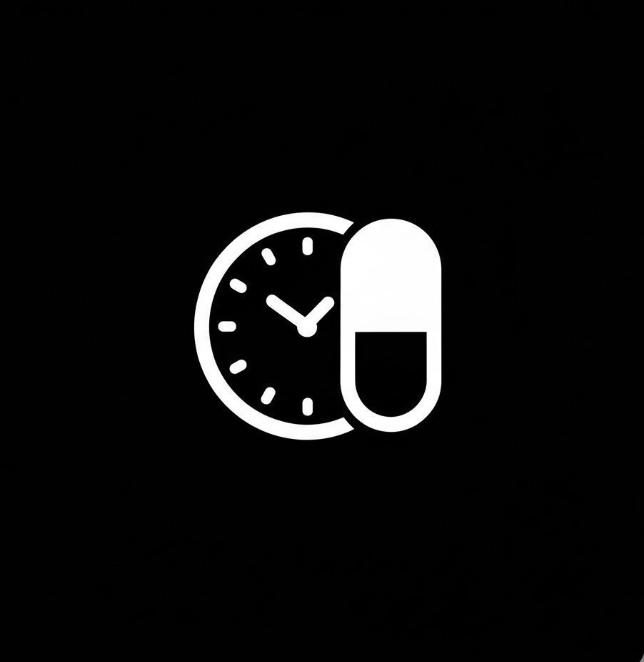
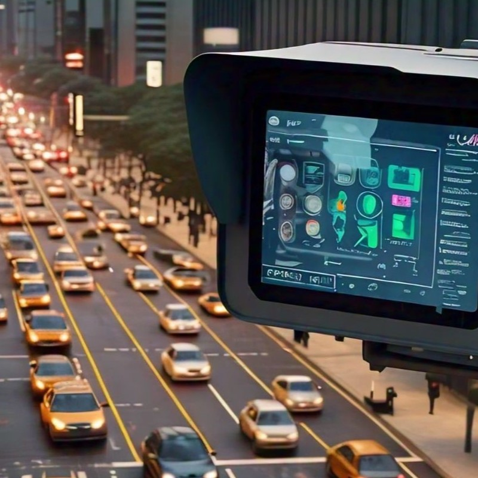
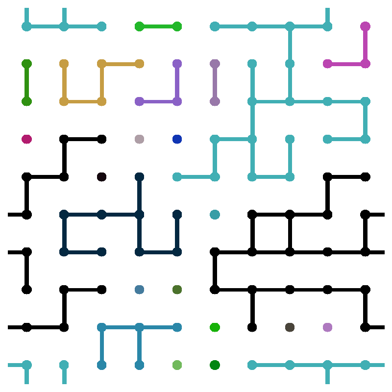
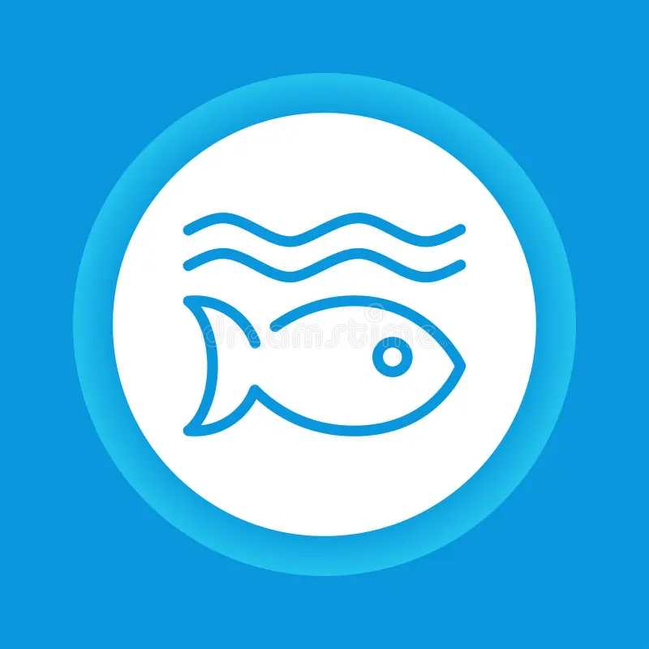
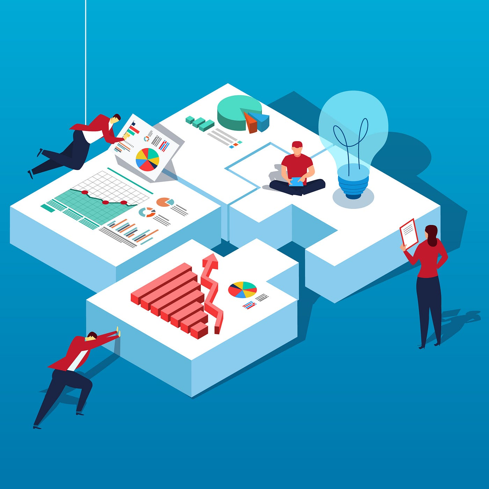
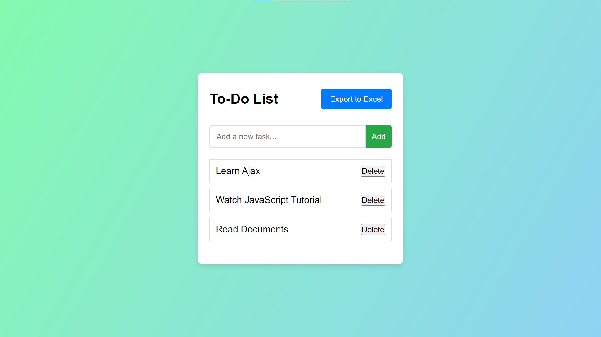
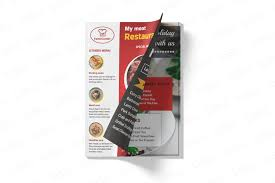

INITIALIZING...
Hi, I'm Lakshan
Computer Science Undergraduate
From Sri Lanka
Exploring about Robotics, Embedded Systems, and Innovation

Exploring about Robotics, Embedded Systems, and Innovation

I am an undergraduate Computer Science student at the Information Institute of
Technology,
driven by a passion for innovation and real-world problem-solving through technology.
My journey in tech started with Python, and I am currently expanding my expertise in Java,
HTML,C,C++
and software development to build smarter, more efficient solutions.
I have also participated in robotics competitions, gaining hands-on experience and knowledge in
robotics and automation.
I am eager to connect with professionals in Hardwere and software engineering and innovation,
collaborate on
exciting projects, and explore opportunities in tech-driven problem-solving.

AlertRix is a smart automated pill-dispensing system designed to help people manage their medication safely and on time. It combines embedded hardware with a mobile app to monitor schedules and dispense the correct pills automatically. The system focuses on improving medication adherence through smart alerts and remote monitoring.

IoT Sewerage Multi-Gas Detection System – An ESP32-based monitoring system designed to detect hazardous gases such as CO₂, H₂S, CO, NH₃, NO₂, CH₄, formaldehyde, and VOCs along with temperature and humidity. The system streams real-time environmental data to a cloud dashboard and triggers alerts when unsafe conditions are detected. Built to improve safety in sewage environments and other high-risk areas by enabling early detection of dangerous gas exposure.

A Python-based traffic management system with a graphical interface that visualizes traffic patterns using real-time data analysis.

Developed a Python-based percolation simulation that models liquid flow through dynamic grids using custom pathfinding algorithms.

Collaborative web project focusing on ocean conservation and marine biodiversity as part of the UN Sustainability Goals.

A specialized system for tracking construction projects, workforce allocation, and real-time project statistics for corporate use.

A simple Flutter Todo List app allowing users to add and delete tasks dynamically. Features a clean UI with a text input, add button, and a scrollable list of tasks. Demonstrates state management using StatefulWidget and setState for real-time updates. Perfect for beginners learning Flutter basics.

A simple Flutter app showcasing a restaurant menu with various noodle and rice dishes. Each item is displayed in a styled container with name, description, and price. Uses ListView for scrolling and BoxDecoration for UI styling, making it a clean and visually appealing menu interface.
Here’s a version under 350 characters: A Flutter-based calculator app with a black-themed UI, circular buttons, and support for basic operations (+, –, ×, ÷). It shows real-time input, handles interactions with InkWell and setState(), supports decimals, and includes a clear button. Responsive design ensures consistent layout.
Available for Internship, freelance work, or discussing new tech innovations.